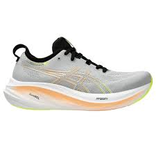

|
Imagens
|
Composição
|
Preço
|
|

|
EVASENSE: Tecnologia em EVA, proporciona
alto nível de maciez e maior sensação de
conforto. Gripper: Borracha compactada
para maior aderência e durabilidade.
HYPERSOX: Cabedal em formato de meia,
leve e flexível. Extremamente fácil de
calçar e com ajuste perfeito aos movimentos
dos pés.
|
De R$299,99 Por R$249,99
|

|
HYPERSOX - A tecnologia da Olympikus
em formato de meia, leve e flexível.
Fácil de calçar e com ajuste perfeito
ao pé. EVASENSE- A tecnologia da Olympikus
em EVA para máxima maciez e conforto absoluto.
GRIPPER - A tecnologia da Olympikus com borracha
compacta antiderrapante e de alta resistência.
|
De R$299,99 Por R$229,99
|

|
Air Mesh, Enerzy Next, Mizuno Wave, Mizuno Enerzy e X10.
Solado tem a tecnologia X10, um composto de borracha com
carbono que garante maior durabilidade.
|
De R$599,99 Por R$287,99
|